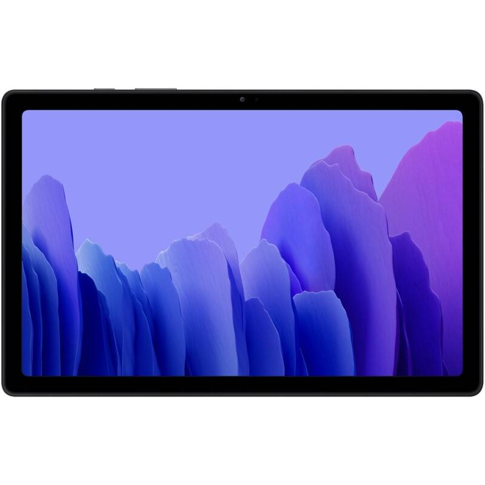
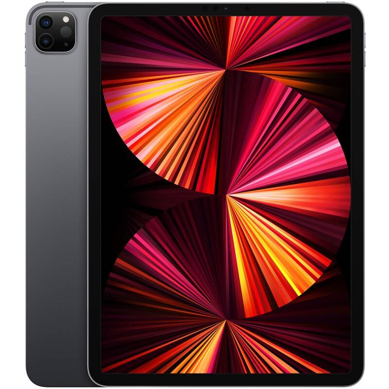
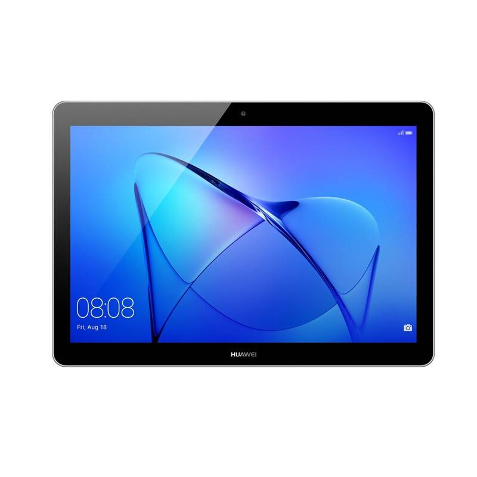
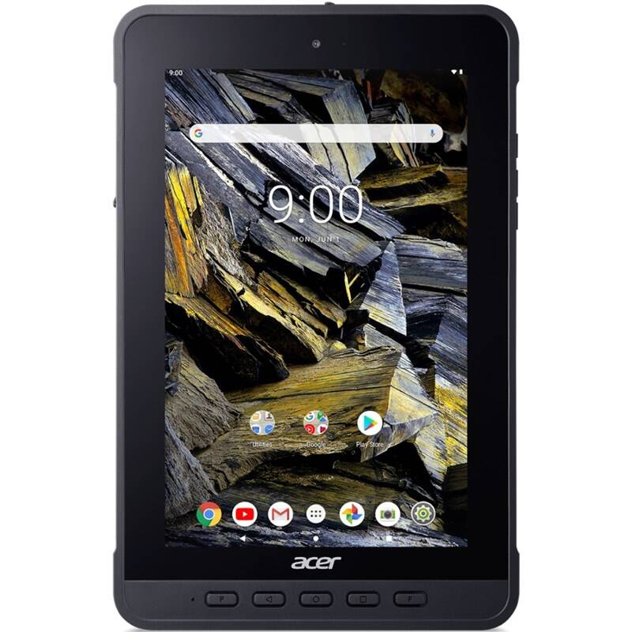

Kvalitne vybavený tablet s príjemnou cenou, ktorý je vhodný pre celú rodinu? Práve ste ho našli. Lenovo Tab M10 Plus vás ohromí nadupaným osemjadrovým procesorom, LTE pripojením či zvukovou technológiou Dolby Atmos. Vďaka jeho 10,3-palcovému displeju s Full HD rozlíšením si prezriete každý obrazový detail v perfektnej kvalite. Tablet je vybavený Androidom s Google Asistentom, odomykaním pomocou tváre i ambientným módom. Vďaka detskému režimu poskytuje vhodnú a bezpečnú zábavu aj pre najmladších členov vašej domácnosti.
Kľúčové vlastnosti:
Uhlopriečka 10.3 "
Rozlíšenie displeja (px) 1920 x 1200
Typ displeja IPS LCD
Počet jadier 8
Typ procesora Mediatek
Označenie procesora Helio P22T
Frekvencia procesora 2300 MHz
Kapacita flash pamäte 64 GB
Veľkosť pamäte RAM 4 GB
Rozlíšenie kamery 8 Mpx
650€
Tablet Samsung Galaxy Tab A7 (SM-T500NZAAEUE)

Popis
Galaxy Tab A7 od spoločnosti Samsung ponúkne svojim používateľom nadupaný balíček vybavení. Disponuje elegantným dizajnom, ktorý sa vyznačuje odolným kovovým rámikom a hrúbkou 7 milimetrov. Je vybavený 10,4-palcovým displejom a zvukovou technológiou Dolby Atmos. Nechýba mu kvalitný osemjadrový procesor, 8-Mpix fotoaparát ani veľkokapacitná batéria. Tablet má špeciálny mód pre deti, ktorý im poskytne bezpečné digitálne prostredie, aj tmavý režim. Navyše ho môžete spárovať so svojim inteligentným telefónom Samsung.
Kľúčové vlastnosti:
Uhlopriečka 10.4 "
Rozlíšenie displeja (px) 2000 x 1200
Typ displeja aktívny TFT
Počet jadier 8
Typ procesora Snapdragon
Označenie procesora 662
Frekvencia procesora 2000 MHz
Kapacita flash pamäte 32 GB
Veľkosť pamäte RAM 3 GB
Rozlíšenie kamery 8 Mpx
650€
Tablet Apple iPad Pro 11 (2021)

Popis
Apple iPad Pro 11 (2021) je najvýkonnejším zariadením svojho druhu. Ponúka totiž dokonalé spojenie skvele optimalizovaného systému iPadOS s prevratným čipom Apple M1. Výsledkom je, že je perfektným nástrojom aj na náročné práce na cestách.
Kľúčové vlastnosti:
Uhlopriečka 11.4 "
Rozlíšenie displeja (px) 2000 x 1200
Typ displeja aktívny TFT
Počet jadier 8
Typ procesora Snapdragon
Označenie procesora 662
Frekvencia procesora 3200 MHz
Kapacita flash pamäte 32 GB
Veľkosť pamäte RAM 4 GB
Rozlíšenie kamery 8 Mpx
1400€
Tablet Huawei MediaPad T3 10 32 GB (TA-T310W32TOM)

Popis
Predstavujeme vám inteligentný tablet Huawei MediaPad T3 10, ktorý sa zaručene stane nepostrádateľným pomocníkom pre celú vašu rodinu. Vy si jeho prostredníctvom vybavíte nevyhnutnú pracovnú agendu a užijete si oddych pri sledovaní filmov či prechádzaní po sociálnych sieťach, zatiaľ čo vaše deti si na ňom zahrajú veľa zábavných i poučných hier. Skvelé zobrazenie vám za všetkých okolností zaistí veľký displej s uhlopriečkou 9,6 palca.
Kľúčové vlastnosti:
Uhlopriečka 9.6 "
Rozlíšenie displeja (px) 1280 x 800
Typ displeja IPS LCD
Počet jadier 4
Typ procesora Qualcomm
Označenie procesora 425
Frekvencia procesora 1400 MHz
Kapacita flash pamäte 32 GB
Veľkosť pamäte RAM 2 GB
Rozlíšenie kamery 5 Mpx
350€
Tablet Acer Enduro T1 (ET108-11A) (NR.R0MEE.002)

Popis
Nech už sa vaše podnikanie zaoberá čímkoľvek, s tabletom Acer Enduro T1 (ET108-11A, NR.R0MEE.002) môžete svoju činnosť posunúť o úroveň vyššie. Ide totiž o praktický prístroj, ktorý je ideálnou voľbou pre pracovníkov v maloobchode, skladoch i napríklad výrobných závodoch. Je veľmi odolný, a tak vydrží aj hrubšie zaobchádzanie. Ponúka programovateľné tlačidlá a veľa voliteľného príslušenstva, takže ho môžete presne prispôsobiť svojim potrebám.